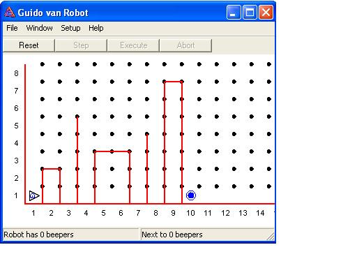

Guido van Robot Exam
Please note that you must answer each of the following questions SEPARATELY.
- Define a new function called goToOrigin that positions a robot on 1st Street
and 1st Avenue facing east, regardless of its initial location or the direction
it is initially facing. Assume that there are no wall sections present. Hint:
Use the south and west boundary walls as guides.
- Program a robot to run a super-duper steeplechase. In this race, the hurdles
are arbitrarily high and arbitrarily wide. In each race course the finish
is marked by a beeper, which the robot must pick up before turning itself
off. For full marks, your robot must be able to run the steeple chase on the
following worlds: world 1, world 2,
world 3.

- Write a definition for a new function, pickAndFace, whose action depends
on how many beepers there are on the corner where a Robot named Guido is standing.
Guido may be facing in any direction when this instruction is invoked, and
there may be anywhere from 0 to 5 beepers on the corner:
No beepers on corner: Guido does nothing.
1 beeper on corner: Guido picks it up and faces north.
2 beepers on corner: Guido picks them up and faces west.
3 beepers on corner: Guido picks them up and faces south.
4 beepers on corner: Guido picks them up and faces east.
5 beepers on corner: Guido picks them up and turns himself off.
Thoroughly test your program out on a variety of worlds.